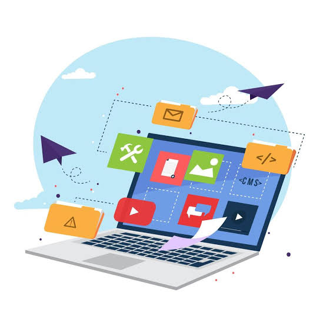

¿Qué es el ciclo de vida?
El ciclo de vida de un sitio web está formado por diferentes etapas que permiten planear, diseñar, desarrollar, publicar y mantener una página web.
📝 Planeación
Se establecen los objetivos, el público y la información que tendrá el sitio.
🎨 Diseño
Se determina la apariencia, colores, tipografías y distribución de los elementos.
💻 Desarrollo
El diseño se convierte en un sitio funcional utilizando tecnologías como HTML, CSS y JavaScript.
🔍 Pruebas
Se revisa que los enlaces, imágenes, formularios y funciones trabajen correctamente.
🚀 Publicación
El sitio se coloca en un servidor y se configura el dominio para que pueda ser visitado.
🔧 Mantenimiento
Se realizan actualizaciones, correcciones, mejoras de seguridad y cambios de contenido.